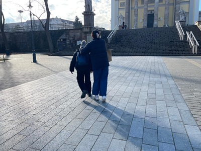
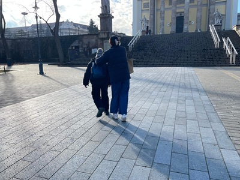

On this day, the world grew bright,
For you were born to light my night.
A heart so pure, a soul so true,
My universe smiles because of you.
Happy Birthday!
Kindly read this slowly..
Dear Mookie, today is a day that feels so special because, on this day, you were born. I am grateful that you exist, that you're here, and that, in this big, unpredictable life, I get to share a little piece of it with you. On your special day, there's something I've always wanted to say—something that I don't say often enough. I know I haven't been good at expressing myself, and, maybe I've kept too many things unspoken. But from the bottom of my heart, thank you—for being in my life, and for simply being you.
Thank you for your care, your warmth, and every beautiful things you bring into my life. You're my safe place, my constant, the one who keeps me steady when everything else feels uncertain. When the world is heavy, you somehow make it lighter. When I think like I'm fighting through things alone, somehow you remind me that you're right there beside me, cheering me on. With you, I can be my most honest self, without fear of judgment, no need to put on a mask. I feel comfort knowing that I am fully accepted, that I don’t have to hold anything back, because you see me—the real me—and you still choose to stay. And for that, I could never thank you enough.
Mookie, on this new chapter of your life, I wish not only for good things to happen to you, but I hope you truly feel them. I hope you feel loved without questions, surrounded by people who really appreciate you, who help you rise higher, cheer for you, and always want the best for you. I hope the dreams you've been holding begin to find their way to you, and the path ahead brings you closer to the future that you've always imagined.
ที่รัก, I don't know where life will take me, the future is full of uncertainties. Sometimes it's hard to know who will stay or drift away. But one thing I do know for sure is that, I will never forget you. I'll always carry a piece of you with me. After all, I have realized that we've shared so much already—the laughter, the tears, the highs, and the lows (Few tears drop as I write this part). Every moment is saved safely in my memory, and I'll always remember you.
Mookie, wherever the future takes you, I want you to keep being the beautiful, loving, and radiant person. Bring light to everyone around you. Never stop chasing your dreams, no matter how big or small. Mookie, I know life won't always be easy, there will be times when everything feels overwhelming. But promise me, you won't ever give up on life. Even when it feels like the world is pushing against you, keep moving forward. You'll always find your way.
Mookie, no matter where life leads you, know that my thoughts and wishes will always be with you.
You'll always have someone who believes in you, and wish the very best for you.
And that someone, is me.
Happy Birthday.
Budapest, April 17 2025
With love,
Capybara
 
